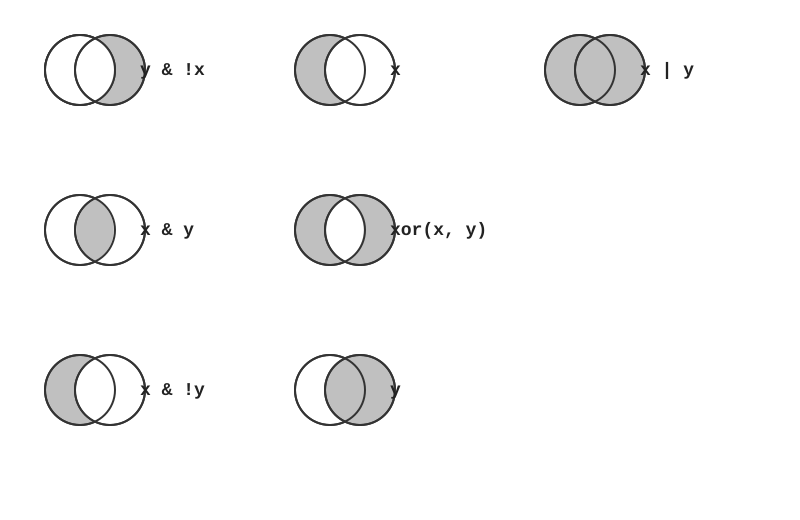
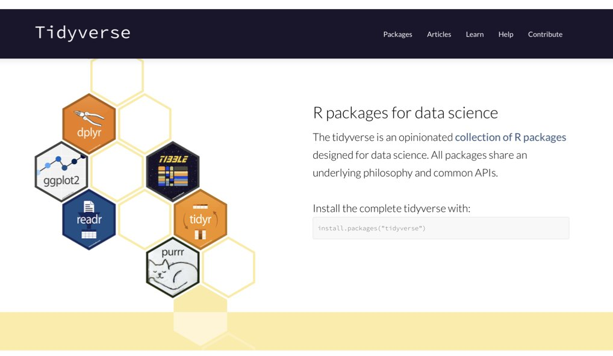
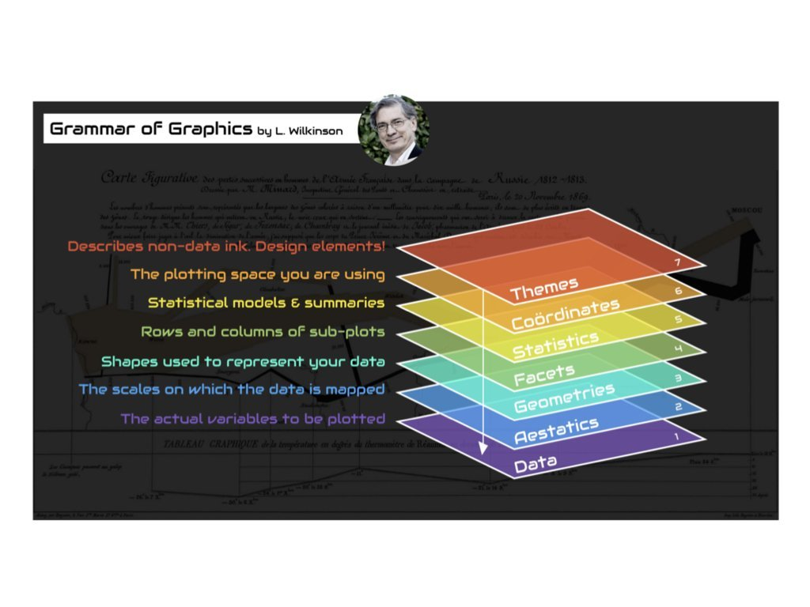

Lecture 07 - Computational Tools for Bioengineers
Going Further with R and Python: Packages, the Tidyverse and ggplot2
2026-11-09
Book reading for this lecture
The course book goes deeper on everything in this lecture. Read before or after class:
Goals for today
- Installing vs. loading packages; inspecting objects and reading error messages
- Logical operators, filtering, type conversion and missing values
- The tidyverse and the pipe
|>for data wrangling - ggplot2 and the grammar of graphics; choosing the right plot
Going further with R and Python
Installing vs. loading packages
install.packages()puts a package on your computer (from CRAN)library()makes it available in this session - restarting R means re-runninglibrary()- “there is no package called …” means you never installed it
- Bioconductor packages (genomics) use
BiocManager::install("name") - Use one function without loading the package:
readxl::read_excel("file.xlsx")
pip install(from PyPI) puts a package in the active environment;condaalso handles compiled tools (e.g.bioconda);uvis a fast modern all-in-oneimportmakes it available in this sessionModuleNotFoundError: No module named 'pandas'means it is not installed in this environmentpip freeze > requirements.txtrecords versions, likerenvin R
Inspecting objects and getting help
str(mydata) # structure: type, dimensions, first values - your #1 tool
summary(mydata) # quick summary of every column
class(mydata) # what kind of object is this?
dim(mydata) # rows x columns
names(mydata) # column names
?mean # help page for a function
??"linear model" # search help across all packages
sessionInfo() # R version + loaded package versions - put at the end of reportsmydata.info() # columns, dtypes, non-null counts - your #1 tool
mydata.describe() # quick summary of every numeric column
type(mydata) # what kind of object is this? <class 'pandas.core.frame.DataFrame'>
mydata.shape # (rows, columns)
mydata.columns # column names
mydata.dtypes # type of each column
help(pd.read_csv) # help page for a function (or pd.read_csv? in Jupyter/Positron)
import sys; print(sys.version); print(pd.__version__) # versions - put at the end of reportsTip
When an object surprises you, run str() (R) or .info() / type() (Python) on it first. In Positron or RStudio, the Variables/Environment pane shows the same information.
Common gotchas that bite everyone
- R counts from 1, and
x[-1]drops the first element (it is not “the last” as in Python) =vs==:=assigns or names an argument;==tests equalityNAis contagious:mean(c(1, NA, 3))isNA- usena.rm = TRUE- Floating point:
0.1 + 0.2 == 0.3isFALSE- useall.equal() - Case matters:
Dataanddataare different objects - Working directory: “cannot open file” usually means R is looking in the wrong folder - check
getwd()and use project-relative paths
- Python counts from 0,
x[-1]is the last element, and a slicex[1:3]excludes the end (elements 1 and 2) =vs==: same as R -=assigns,==tests equality^is not power: use**y = xdoes not copy a list or array - both names point to the same object; usex.copy()NaNis contagious in numpy, butpandas.mean()skips it by default (skipna=True)- Floating point:
0.1 + 0.2 == 0.3isFalse- usemath.isclose() - Indentation is syntax - mixing tabs and spaces, or a missing
:, givesIndentationError/SyntaxError - Wrong environment:
ModuleNotFoundErrorusually means the package is installed in a different Python - checkwhich python3 - Working directory:
FileNotFoundError- checkPath.cwd()and use project-relative paths
Logical operators and filtering a vector
| Operator | Meaning | R example | Python example |
|---|---|---|---|
==, != |
equal / not equal | x == 5 |
x == 5 |
<, >, <=, >= |
comparisons | x < 10 |
x < 10 |
| and | both true | x > 0 & x < 10 |
(x > 0) & (x < 10) |
| or | either true | x < 0 \| x > 10 |
(x < 0) \| (x > 10) |
| not | negation | !(x > 5) |
~(x > 5) |
| membership | is element of | x %in% c(1, 2, 3) |
np.isin(x, [1, 2, 3]) |

Converting types and handling missing values
| Task | Code | Result |
|---|---|---|
| Text to number | as.numeric("42") |
42 |
| Text that isn’t a number | as.numeric("hello") |
NA (with a warning) |
| Number to text | as.character(42) |
"42" |
| Number to logical | as.logical(1) |
TRUE |
| Check for missing | is.na(x) |
logical vector |
| Don’t do this! | x == NA |
always NA |
| Mean ignoring missing | mean(x, na.rm = TRUE) |
the mean of the rest |
Warning
as.numeric() on a factor returns the integer level codes, not the labels - use as.numeric(as.character(x)). And always test for missing values with is.na(), never == NA.
| Task | Code | Result |
|---|---|---|
| Text to number | float("42") |
42.0 |
| Text that isn’t a number | float("hello") |
ValueError (an error, not NaN) |
| Number to text | str(42) |
"42" |
| Whole column to number | pd.to_numeric(col, errors="coerce") |
bad values become NaN |
| Check for missing | pd.isna(x) / col.isna() |
boolean array |
| Don’t do this! | x == np.nan |
always False |
| Mean ignoring missing | col.mean() (pandas skips NaN) / np.nanmean(x) |
the mean of the rest |
Reading error messages
| Error message | Meaning | Fix |
|---|---|---|
object 'x' not found |
Variable doesn’t exist | Check spelling; run the line that creates it |
could not find function |
Package not loaded | library() the package, or check spelling |
unexpected ')' / unexpected symbol |
Mismatched brackets or quotes | Count opening/closing brackets |
non-numeric argument to binary operator |
Wrong data type | Check with class() or str() |
cannot open file ... No such file |
Wrong working directory or path | getwd(), list.files(), fix the path |
| Error message | Meaning | Fix |
|---|---|---|
NameError: name 'x' is not defined |
Variable doesn’t exist | Check spelling; run the cell that creates it |
ModuleNotFoundError |
Package not installed in this environment | pip install, check which python3 |
SyntaxError / IndentationError |
Missing :, bracket, or bad indentation |
Look at the line above the arrow too |
TypeError: unsupported operand |
Wrong data type | Check with type() or .dtypes |
FileNotFoundError |
Wrong working directory or path | Path.cwd(), fix the path |
Tip
Read error messages carefully - R reports the failing call, Python reports a traceback where the last line tells you what went wrong. Then paste the exact message into a search engine or an AI assistant.
The tidyverse family of packages

| Package | Purpose | pandas / Python equivalent |
|---|---|---|
dplyr |
Data manipulation (filter, select, mutate, summarise) |
pandas methods |
ggplot2 |
Data visualization | matplotlib, seaborn, plotnine |
tidyr |
Reshaping data (pivot_longer, pivot_wider, separate) |
melt, pivot |
readr |
Fast reading of CSV, TSV files | pd.read_csv |
stringr |
String manipulation | str methods, re |
purrr |
Functional programming tools (map) |
list comprehensions |
Loading tidyverse loads all of these at once (plus tibble and forcats).
A taste of the tidyverse: the pipe |>
| Verb | What it does |
|---|---|
filter() |
Keep rows matching a condition |
select() |
Keep or drop columns |
mutate() |
Add or change columns |
arrange() |
Sort rows |
group_by() + summarise() |
Summaries per group |
| dplyr verb | pandas method |
|---|---|
filter() |
.query("...") or df[df.col > 4] |
select() |
df[["a", "b"]] / .drop(columns=) |
mutate() |
.assign(new=...) |
arrange() |
.sort_values("col") |
group_by() + summarise() |
.groupby("col").agg(...) |
Note
Read |> as “and then”. The older %>% pipe does the same thing. In pandas the dot does the same job - wrap the chain in ( ) so you can put each step on its own line.
A taste of ggplot2: the grammar of graphics
- Data + aesthetic mappings (
aes(): which column goes to x, y, color…) + geoms (points, boxes, lines) - Layers are added with
+ - Same pattern for every plot type - learn it once;
plotninebrings exactly this grammar to Python,seabornis the more common Python choice - More in the course book’s R Programming chapter and R Command Reference
The grammar of graphics: a plot is a stack of layers

Common ggplot2 geoms
| Geom | Purpose | Data type | seaborn equivalent |
|---|---|---|---|
geom_point() |
Scatterplots | Two continuous | sns.scatterplot() |
geom_line() |
Line plots | Continuous over ordered | sns.lineplot() |
geom_bar() |
Bar charts | Categorical counts | sns.countplot() |
geom_histogram() |
Histograms | Single continuous | sns.histplot() |
geom_boxplot() |
Boxplots | Continuous by category | sns.boxplot() |
geom_smooth() |
Trend lines | Two continuous | sns.regplot() |
Tip
facet_wrap(~ group) splits any plot into one panel per group, and ggsave("figure.pdf") writes the last plot to a file. Data-visualization mechanics get a full chapter in the course book.
Choosing the right kind of plot

Start from the question and the type of data you have
Key Takeaways
- Same ideas, two syntaxes: variables, vectors, functions, data frames and plots work the same way in R and Python - once you know one, the other is mostly vocabulary
- R:
<-, counts from 1,c()vectors,data.frame,library(),|>pipes,ggplot2 - Python:
=, counts from 0, lists andnumpyarrays,pandasDataFrame,import, method chaining,matplotlib/seaborn - Install once, load every session:
install.packages()+library()vspip install(in a virtual environment) +import - Run code as scripts (
Rscript,python3) for pipelines and in Quarto when you want prose, code and output together - When in doubt:
str()/.info(),?fun/help(fun), and read the error message
BioE Computational Tools 2026 - Knight Campus